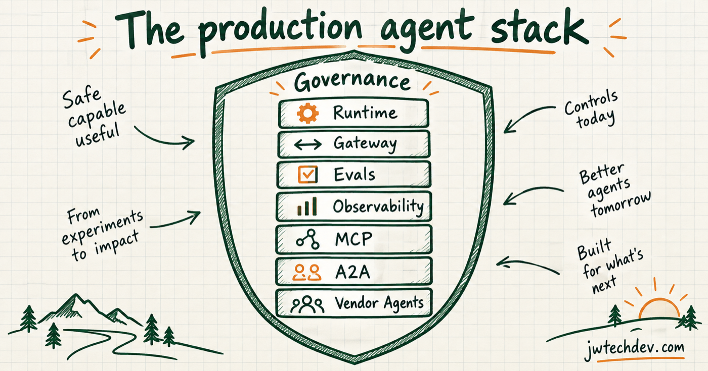

The production AI agent stack is hardening
The important AI story is no longer the chat interface. Runtime, gateway, evaluations, observability, MCP, A2A, identity, and vendor-native agents are becoming the operating layer around the model.

Quick answer
AI agents are becoming distributed software systems. The model may decide what to do, but the production system still has to run the work, mediate tools, authorize actions, measure quality, preserve evidence, and recover when something fails.
That is why the durable product is not an agent UI. It is a governed control layer around agent work.
Three market signals
First, AWS made a new AgentCore Runtime generally available with serverless microVM compute, scale-to-zero behavior, memory reclamation, and hardware-enforced session isolation. That is infrastructure language, not demo language.
Second, the July 2026 MCP revision removed the initialize handshake and session identifier from the core protocol. Requests now carry the context they need, which makes MCP easier to scale behind normal load balancing patterns.
Third, Adobe's Marketo MCP server exposes more than 100 operations across leads, forms, programs, smart campaigns, emails, snippets, lists, and folders. Vendor systems are becoming callable by agents, which increases both speed and write-back risk.
The seven-layer production stack
Runtime executes the work with isolation and lifecycle controls. Gateway mediates tools, authentication, policy, and protocol. Evaluations test whether behavior meets a release threshold. Observability connects model decisions to tool calls, approvals, latency, cost, and outcomes.
MCP exposes tools and data. A2A gives independent agents a delegation contract. Vendor-native agents bring domain actions into the products teams already use.
The common layer across all seven is governance: who can act, on what data, through which tool, under what budget, with whose approval, and with what evidence.
What good design looks like
Keep transport concerns separate from workflow state. An MCP server should not become the hidden home of task, approval, artifact, or escalation state. Keep those states explicit in the workflow layer.
Treat every write action as a policy decision. Reading a campaign, drafting an email, updating a lead, publishing a program, and deleting an asset should not share one permission level.
Make quality gates real. If an evaluation can fail without blocking promotion, it is a dashboard, not a release control.
What builders should do next
Start with one end-to-end workflow and document its runtime, tools, data classes, approval gates, trace fields, eval suite, cost limits, failure states, and rollback path. That contract will reveal more than another round of prompt tuning.
The model remains important. But production trust is created by the system around it.
Sources checked
Want the starter kit?
Get practical maps for connecting cloud fundamentals, AI workflows, and approval gates.
Get resources